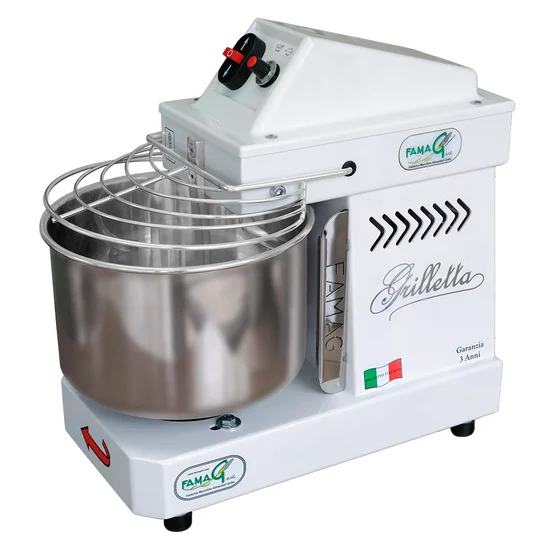
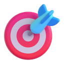
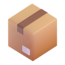
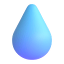
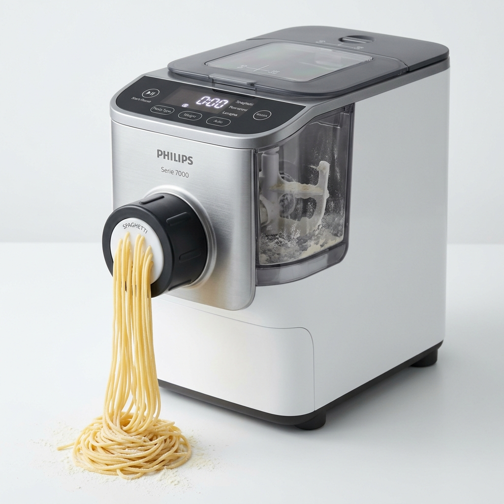
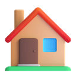
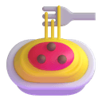

Cucina applicata e panificazione tecnica — parametri reali, risultati replicabili.
Ogni ricetta è stata perfezionata con dosi precise, parametri tecnici e note dettagliate per risultati replicabili al 100%.
Ogni ricetta è tarata specificamente per questi strumenti. Hardware serio per risultati seri.

ImpastiImpastatrice a spirale professionale con motore brushless e tecnologia inverter. 10 velocità selezionabili, capacità 5 kg, vasca da 7 litri. Progettata specificamente per impasti ad alta idratazione (fino al 95%). Made in Italy — il cuore di ogni lievitato.





Pasta HomeMacchina per la pasta automatica con tecnologia ProExtrude. Pesatura automatica integrata, 8 trafile incluse, fino a 8 porzioni (800g di farina). Pasta pronta in meno di 10 minuti. App Philips HomeID per ricette guidate. Ideale per pasta quotidiana veloce e senza glutine.

Appassionato di panificazione artigianale, pasta fresca e impasti ad alta idratazione. Questo ricettario nasce dalla necessità di avere ricette personalizzate e calibrate esattamente sui miei strumenti: la Famag Grilletta per gli impasti, la Fimar PF25E e la Philips Serie 7000 per la pasta. Ogni ricetta è documentata con precisione tecnica per risultati replicabili al 100%.